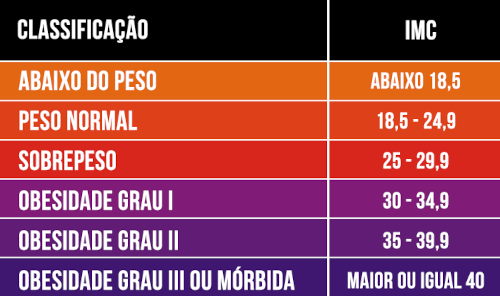

Peso: Altura:
O Índice de Massa Corporal (IMC) trata-se de uma medida de massa corporal e altura para se saber o peso ideal. O IMC é calculado dividindo o peso (em kg) pela altura ao quadrado (em m), de acordo com a seguinte fórmula: IMC = peso / (altura x altura). O resultado do IMC é dado em kg/m2.
Veja a tabela de IMC abaixo:
